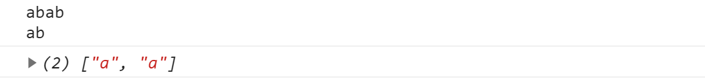
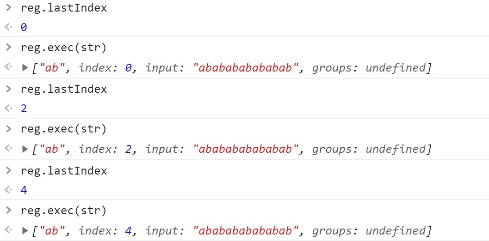
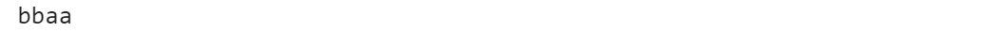
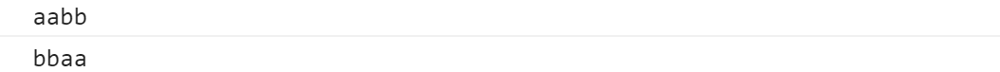
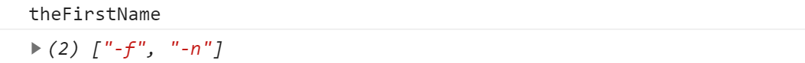

一、转义字符 \
用于字符串中
- 换行 ：\n
- 缩进：\t
- 引号：
\' \"
- \：
\\
- 多行字符串：
var str = "<div>\
<p></p>\
<span></span>\
</div>"
|
正则中不用转义字符的符号
- 空格 - : < >
二、i,g,m
source：表示正则表达式内容
- i:忽略大小写进行匹配
- g:将字符串中所有符合条件的片段找出来,如果不加,那么找到一个片段就停止查找
- m:多行匹配
var str = 'abab\nab';
var reg = /^a/gm;
console.log(str);
console.log(str.match(reg));
|

三、正则表达式开头结尾 ^ $
- 如果^ $同时出现，那么匹配的范围固定，为整个字符串长度
四、表达式与子表达式
表达式 []
- RegExp中一个[]对应一位符号，内部是该位符号的取值范围
- [^…]表示非…
子表达式 ()
- (A|B):匹配片段A或B
表达式与子表达式连用,如：/(A|B)[]/g
子表达式与反向引用
var str = 'aaabbbb';
var reg = /(\w)\1(\w)\2/g;
console.log(str.match(reg));
|
- \1:表示反向引用第一个子表达式里面的内容
- \2:表示反向引用第二个子表达式里面的内容
- 就相当于将子表达式里面的内容copy一份
五、元字符
- \w \W: [0-9A-z] [^\w]
- \d \D: [0-9] [^\d]
- \s \S: 空白字符 [^\s]
- \b \B: 单词边界 [^\b]
- \t \n: 制表符 换行符(匹配非视觉上的 如：str=’aa\nb’)
六、量词
量词：一个人中一个是量词，RegExp中表示要匹配的字符个数
贪婪匹配原则：尽可能多的匹配，能匹配四个字符就不匹配三个
- +: 1-infinity
- *: 0-infinity
- ?: 0-1
- {X}: 匹配X个
- {X,Y}: 最少匹配X个，最多匹配Y个
- {X, }: 最少匹配X个
七、正则方法
reg.test(str): 返回值true false,只能判断字符串里是否有正则片段
reg.exec(str): 根据游标lastIndex位置向后匹配
- 手动修改游标位置不会影响函数正常功能
- reg不加g，lastIndex始终为0
var str = 'ababababababab';
var reg = /ab/g;
|

八、支持正则的字符串方法
- str.match(reg): 返回匹配到的片段
- str.search(reg): 返回匹配到的内容的位置
- str.split(reg): 按正则表达式将字符串拆分，如果正则中有子表达式，返回的数组中也会带有子表达式
- str.replace(reg):
var str = 'aaabbbbcccddd';
console.log(str.replace('a','M'));
|
var str = 'aa';
var reg = /a/g;
console.log(str.replace(reg,'M'));
|
var str = 'aabb';
var reg = /(\w)\1(\w)\2/g;
console.log(str.replace(reg,'$2$2$1$1'));
|

var str = 'aabb';
var reg = /(\w)\1(\w)\2/g;
console.log(str.replace(reg,function($,$1,$2){
console.log($);
return $2+$2+$1+$1;
}));
|

九、正向预检(正向断言)
选有限制条件的内容，例，选择一个头铁的学生，限制条件：头铁，选择对象：学生
- 肯定条件：(?=b)
- 否定条件：(?!b)
var str = 'abaaaaaacab';
var reg = /a(?=b)/g;
var reg = /a(?!b)/g;
console.log(str.match(reg));
|


十、非贪婪匹配
非贪婪匹配原则：能少匹配绝对不多匹配
开启方式：加问好 ?
var str = 'acaab';
var reg = /a+/g;
console.log(str.match(reg));
|
var str = 'acaab';
var reg = /a+?/g;
console.log(str.match(reg));
|
十一、习题
空格在RegExp里面直接打空格，没有转义字符
- 正则表达式/a??/g中两个问号分别是什么意思?
- 第一个是量词：每次匹配0-1个a
- 第二个是贪婪匹配
var str = 'ac';
var reg = /a??/g;
console.log(str.match(reg));
|

- 字符串去重:”aaaaaabbbbccc”
var str = 'aaaaaabbbbccc';
var reg = /(\w)\1*/g;
console.log(str.replace(reg,'$1'));
|
- 给字符串”100000000”每三位添加一个’.’，输出100.000.000
var str = '100000000';
var reg = /(?=(\B)(\d{3})+$)/g;
console.log(str.replace(reg,'.'));
|
- 将the-first-name转化成theFirstName
var str = 'the-first-name';
var reg = /-(\w)/g;
console.log(str.replace(reg,function($,$1){
return $1.toUpperCase();
}));
console.log(str.match(reg));
|
